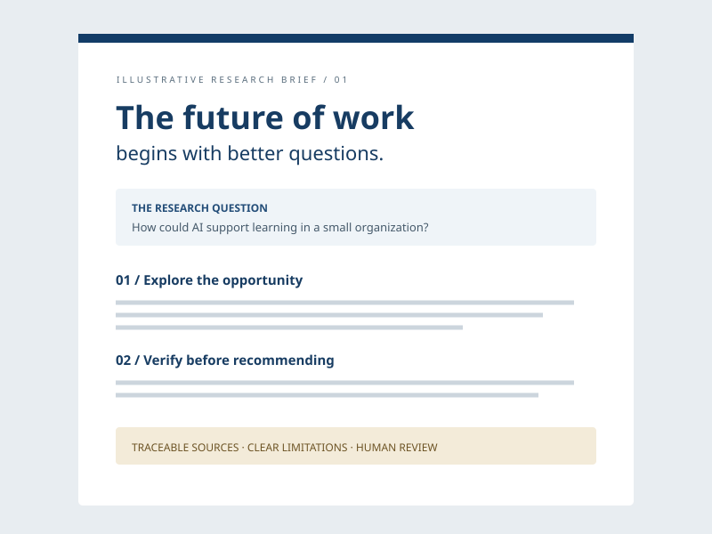

Activity 1
10 POINTS · 10% OF COURSE GRADE
AI Research & Intelligence Brief
Investigate an emerging workforce, business, technology, or industry trend—and check the evidence before recommending action.
What you’ll practice
- Use AI-powered research and information retrieval tools.
- Evaluate accuracy, credibility, and reliability.
- Verify key findings with credible sources.
What you’ll create
A professional intelligence brief summarizing key insights, opportunities, challenges, and recommendations.

Useful insights begin with evidence you can trace.